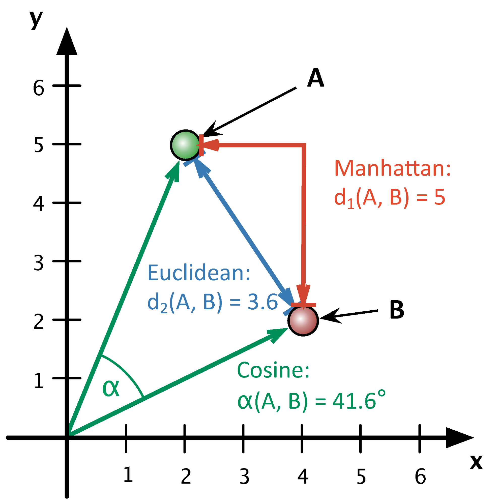
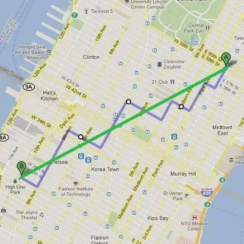

10 Lesson 10
10.1 Building Memex - Step 4
One of the most interesting aspects behind the idea of memex is connections among its texts: the network of algorithmically generated connections that would suggest one what else s/he should read or might be interested to read, based on what s/he is reading right now. There are plenty of different methods that are actively used in digital humanities to identify different kinds of similarities among texts in a corpus, a given body of texts. These methods may be used to identify duplicate or near-duplicate texts (document distance), to identify texts that cover similar themes and topics (topic modeling: for example, Blei 2012), to identify texts that belong to the same forms and genres, to identify texts that might have been written by the same individual (stylometric analysis: for example, Eder, Rybicki, and Kestemont 2016), etc. What is common among all these methods is that they mathematically manipulate numeric abstractions of texts: first, texts are reduced to frequency lists of different kinds; then they are mathematically compared with each other in order to identify different types of similarities. What is different among all these methods is how the numeric abstraction is generated, what features are selected for comparison, and what kind of formulas/algorithms are used to generate similarity measures.
For our purpose, which would be finding thematically similar texts and sections of texts, we would benefit the most from using a combination of the tf-idf (term-frequency - inverse document frequency) method and a document distance algorithm. Chapter 1 of Ramsay’s Reading Machines (Ramsay 2011), which is digitally available via Uni Wien Library, gives a nice general overview of the approach. Matthew Lavin’s Lavin’s Analyzing Documents with TF-IDF on Programming Historian (Lavin 2019) provides a detailed technical description of the entire approach. Please, make sure to read these.
10.2 Some explanations: TF-IDF, Document Distance
To quickly sum up, the steps will be as follows:
- [TF-IDF]
- We calculate term frequencies of all terms in all documents (i.e., our OCR results). Term frequency is relative frequency, i.e. absolute frequency of a term divided by the overall number of terms in a document.
- We then calculate inverse document frequency, computed as the logarithm of the number of the documents in the corpus divided by the number of documents where the specific term appears.
- We then calculate tf-idf as a product of tf and idf values (sometimes additional steps are included to normalize results).
- [Filtering]
- before document distance is calculated, some filtering might be desirable. Filtering is useful and sometimes necessary for a number of reasons. For example, if we are looking for similarities between texts, we may want to exclude terms that occur only in a very small number of texts (additionally, considering that we work with imperfect OCR results, most terms with df=1 are likely to be incorrectly recognized words). Additionally, it also makes sense to filter out terms that occur in too many documents (those terms that occur in all documents would carry no relevant value). An important practical benefit of such filtering is that we will reduce the amount of data that will be used for calculations, and therefore less resources will be required for calculations and they will be done faster.
- Additionally, filtering can be done by using language-specific lists of stopwords (for example, there is no need to include such English words as “a”, “the”, “and”, “or” into calculations). You can find lists of stopwords for specific languages online. Many relevant python packages will have lists of stopwords already included. Curating your own lists of stopwords is usually the best practice.
- Some other procedures can be used to improve results. For example stemming or, better, lemmatization will help to reduce morphological complexity of texts, which is particularly important for highly inflective and agglutinative languages. (however, stemming will also render results less readable). There are two caveats to consider before using these methods: first of all, both methods are language specific — in other words, for example, if you accidentaly apply English lemmatization to German (or the other way around), results will most likely be horrible; second, OCR results are not perfect: again, OCRing German text using
engas a language parameter in Tesseract may yield decent results, but all characters with umlauts are likely to be replaced with corresponding English characters; the results of applying lemmatization of stemming to such text will generate more errors. That said, one should still experiment with these methods.
- [Document Distance Calculations]
- last step: we apply some distance measure calcucations to each and every pair of documents/publications (which are now represented as numeric vectors).
Practical Example. Let’s take a look at a very simple example of comparing the following simple sentences using our approach:
- President Obama returned from his trip to Europe.
- President Bush returned from his trip to China.
- The president returned from his trip.
- And now about something completely different.
As we discussed, we need to convert each text (sentence) into a frequency list. For calculations each text (sentence) is vectorized, i.e. frequencies of each word of each sentence are mapped on the entire vocabulary of the corpus (i.e., all analyzed texts). If any specific word is missing in a particilar text (sentence), its frequency is 0. This is shown in Table 10.1 below.
| 1 | 2 | 3 | 4 | |
|---|---|---|---|---|
| about | 0 | 0 | 0 | 1 |
| and | 0 | 0 | 0 | 1 |
| bush | 0 | 1 | 0 | 0 |
| china | 0 | 1 | 0 | 0 |
| completely | 0 | 0 | 0 | 1 |
| different | 0 | 0 | 0 | 1 |
| europe | 1 | 0 | 0 | 0 |
| from | 1 | 1 | 0 | 0 |
| his | 1 | 1 | 1 | 0 |
| now | 0 | 0 | 0 | 1 |
| obama | 1 | 0 | 0 | 0 |
| president | 1 | 1 | 1 | 0 |
| returned | 1 | 1 | 1 | 0 |
| something | 0 | 0 | 0 | 1 |
| the | 0 | 0 | 1 | 0 |
| to | 1 | 1 | 0 | 0 |
| trip | 1 | 1 | 1 | 0 |
How would we then caclulate distances? The simplest distance to calculate will be Manhattan (or city-block) distance. Essentially, for each word/term, we need to substract the frequency in text 1 from the frequency in text 2.
| 1 | 2 | Manhattan Distance 1-2 | |
|---|---|---|---|
| about | 0 | 0 | 0 |
| and | 0 | 0 | 0 |
| bush | 0 | 1 | |-1| |
| china | 0 | 1 | |-1| |
| completely | 0 | 0 | 0 |
| different | 0 | 0 | 0 |
| europe | 1 | 0 | 1 |
| from | 1 | 1 | 0 |
| his | 1 | 1 | 0 |
| now | 0 | 0 | 0 |
| obama | 1 | 0 | 1 |
| president | 1 | 1 | 0 |
| returned | 1 | 1 | 0 |
| something | 0 | 0 | 0 |
| the | 0 | 0 | 0 |
| to | 1 | 1 | 0 |
| trip | 1 | 1 | 0 |
Then we simply add up absolute values (i.e., treating negative values in the last column as positive) — and that is the distance value: Manhattan distance between sentence 1 and sentence 2 is 4. The symmetric matrix below shows Manhattan distances for all four sentences. These values show that sentences 1, 2, and 3 are quite similar, while sentence 4 is very different from 1, 2, and 3.
| 1 | 2 | 3 | 4 | |
|---|---|---|---|---|
| 1 | 0 | 4 | 5 | 14 |
| 2 | 4 | 0 | 5 | 14 |
| 3 | 5 | 5 | 0 | 11 |
| 4 | 14 | 14 | 11 | 0 |
If we apply filtering to the first three sentences, removing words with df=1, you can see that the first two sentences become identical (Manhattan distance = 0), and the sentence 3 is very close: all three talking about the president returning from his trip:
- President
Obamareturned from his trip toEurope. - President
Bushreturned from his trip toChina. Thepresident returned from his trip.
Other distance measures. There is a variety of different distances that are meant to be more efficient in particular circumstances. Most common distances are Euclidean, Manhattan, and cosine. By and large, cosine distance/similarity8 would be your most optimal option. Main reasons are: 1) both Euclidean and Manhattan tend to give more weight to the most frequent terms; 2) neither Euclidean nor Manhattan are normalized (in their original forms), i.e their values are between 0 and infinity, while cosine distance values are between 0 and 1; 3) since cosine distance focuses on an angle between the vectors of texts in multidimensional space, rather than on the actual distance, it yields better results for texts of varying lengths on same topics (for example, between monographs and articles). You can read more about differences between these distance measures in John Ladd’s “Understanding and Using Common Similarity Measures for Text Analysis” at Programming Historian (Ladd 2020).
The image below offers a graphical representation of these three distances, where A and B are two different texts and y and x are words — y occurs 5 times in A and 2 times in B; x occurs 2 times in A and 4 times in B.

Why Manhattan (city-block) distance is called that way?

10.3 Practicalities
Only a mere few years ago we would have had to write our own code for each and every step described above. Luckily, we now python libraries that efficiently do all the heavy lifting for us. One such library is sklearn; another library which is very useful is pandas (make sure to install both!). Below you can find all relevant code snippets which you will need to put together to complete this part.
What do we need to generate? You will need to put together the following code snippets in order to produce two json files. The first one must contain top keywords for each publication. The second one must contain distances between publications. If you do everything as expected your results will look like the following:
File with tf-idf keywords:
{
"AdamsShepherds2006": {
"adams": 0.1272164898033877,
"administrative": 0.099074881442255,
"animals": 0.07099486255345346,
"bala": 0.08924612054231096,
"barley": 0.06046074109305735,
"corvée": 0.09158504454505918,
"cuneiform": 0.09386636316636131,
"dagan": 0.061182271700903075,
"dec": 0.09320481910701102,
"dynasty": 0.09595469820881344,
"fattening": 0.052203662027505905,
"flocks": 0.05101452549985564,
"gangs": 0.057181428331652115,
"herds": 0.09616271243655308,
"husbandry": 0.0958209157684203,
"iii": 0.13276591518791975,
"labor": 0.12346932617991906,
"lagash": 0.14169565407465887,
"mcc": 0.13380706013477167,
"pasturage": 0.0587244796687148,
"population": 0.05990187305273483,
"presently": 0.05103796476580478,
"prosopographic": 0.052203662027505905,
"province": 0.05866419351034984,
"records": 0.10031873550890447,
"robert": 0.07360610776912387,
"scribal": 0.07822478752418302,
"sheep": 0.15851065662360858,
"shepherd": 0.06216523460065599,
"shepherds": 0.33326918149698254,
"steinkeller": 0.17951743245184246,
"tue": 0.08198952007025857,
"umma": 0.43749736307561765,
"ur": 0.37598501212878616,
"wool": 0.11190732190242117
},
"GarfinkleShepherds2004": {
"babylonian": 0.07650357591327776,
"barley": 0.09592656463776685,
"consumptive": 0.05337901001432162,
"credit": 0.08335590154194376,
"creditor": 0.13067922107308225,
"creditors": 0.07268117801701256,
"customary": 0.10111479309463182,
"debtor": 0.11012714465515581,
"duration": 0.056149153215818835,
"garfinkle": 0.12961758742186816,
"gin": 0.08170723635705109,
"iii": 0.1513526344445101,
"institutional": 0.07383767826894902,
"labor": 0.08619402867315176,
"lending": 0.10344979020528536,
"loan": 0.356626414161827,
"loans": 0.5995451434314758,
"mesopotamia": 0.05251561096144549,
"nippur": 0.06739596933652772,
"phrase": 0.05161099475107544,
"ra": 0.09626067026962869,
"rate": 0.06123888031779106,
"repaid": 0.06660264626574453,
"repayment": 0.1252001522028668,
"shepherds": 0.06507845149950617,
"si": 0.06021635652206201,
"silver": 0.08912141278136604,
"steinkeller": 0.0744916541514434,
"steven": 0.05335019010356139,
"sé": 0.07000447780472778,
"ur": 0.42847893151061767,
"witnesses": 0.06663117140384797
},
}File with distances (more correctly: cosine similarities):
{
"AbdullahMandaean2018": {
"AlonSheikh2016": 0.2915990327301636,
"MinawiRhetoric2015": 0.277281021038338,
"PetriatCaravan2019": 0.27332888217367635,
"RiedlerCommunal2018": 0.25970501516946726,
"SaracogluReview2013": 0.2882066212119597
},
"AdamsShepherds2006": {
"GarfinkleReview2005": 0.3542751363967858,
"GarfinkleShepherds2004": 0.30286604455405086,
"ReidRunaways2015": 0.2812514791059143,
"WidellReflections2005": 0.27154646436723745,
"ZettlerReconstructing2003": 0.32977887642906156
}
}Note: in both files higher values mean more relevance and importance; in the second example (AdamsShepherds2006) all algorithmically identified articles are dealing with ancient Mesopotamian history, and even more specifically, with the Third Dynasty of Ur (See, Adams 2006; Garfinkle 2005, 2004; Reid 2015; Widell 2005; Zettler 2003). Keep in mind that tf-idf keywords are heavily filtered in the example.
10.4 Code Snippets
The following code snippets are fully working and functional. All you need to do is to put them together properly.
10.4.1 Aggregating publications into a corpus
The code snippet below processes all .json files from our memex (remember that we saved our OCR results using this extension; it might be better to use some unique extension though, something like .OCRED, so that we clearly keep different types of files apart). The code below 1) generates a dictionary with citekeys as keys and paths to .json files as values; 2) it then loops through citekeys and, 3) with each iteration of the loop, it loads each OCRed results and updates two lists: one with citekeys and another with texts. The result is all our data sorted into two lists, where items with the same index position are the citation key and the text of the same publication. We will use these lists to generate a table, similar to Table 10.1 above. Look carefully at the code. What else does this code do?
ocrFiles = functions.dicOfRelevantFiles(pathToMemex, ".json")
citeKeys = list(ocrFiles.keys())
docList = []
docIdList = []
corpusDic = {}
for citeKey in citeKeys:
docData = json.load(open(ocrFiles[citeKey]))
docId = citeKey
doc = " ".join(docData.values())
doc = re.sub(r'(\w)-\n(\w)', r'\1\2', doc)
doc = re.sub('\W+', ' ', doc)
doc = re.sub('\d+', ' ', doc)
doc = re.sub(' +', ' ', doc)
docList.append(doc)
docIdList.append(docId)10.4.2 Getting tf-idf Values and Distance Matrix with sklearn
Now that we have our texts prepared, we can use the sklearn library to do all the tricky transformations (for detailed documentation on this library see official user guide); we will also need library pandas. We need to make sure that both librares are installed and proper modules are loaded in the following manner:
import pandas as pd
from sklearn.feature_extraction.text import (CountVectorizer, TfidfTransformer)
from sklearn.metrics.pairwise import cosine_similarityThe sklearn library condenses rather elaborate code into just a few lines. The following lines of code convert our data into a format similar to what you can see in Table 10.1 above. The only difference is that instead of frequencies we will have tf-idf values — these results are saved into the variable vectorized (as sparse matrix). The last line of code generates cosine distances — these results are saved into the variable cosineMatrix (a symmetric matrix, similar to what you can see in Table 10.2 above)
vectorizer = CountVectorizer(ngram_range=(1,1), min_df=5, max_df=0.5)
countVectorized = vectorizer.fit_transform(docList)
tfidfTransformer = TfidfTransformer(smooth_idf=True, use_idf=True)
vectorized = tfidfTransformer.fit_transform(countVectorized) # https://en.wikipedia.org/wiki/Sparse_matrix
cosineMatrix = cosine_similarity(vectorized)Perhaps the most important line to understand in the snippet above is the very first one where we create our own vectorizer: here we can adjust parameters to get different results. (More on parameters here).
ngram_rangecan be defined as follows (To remind you of what ngram is, see Figure 10.1):(1, 1)only unigrams (single tokens) will be considered;(1, 2)means that both unigrams and bigrams will be considered;(2, 2)means only bigrams.

Figure 10.1: What is ngram? Source: StackOverflow
min_dfandmax_dfare parameters to filter out terms with document frequency below (max_df) or above (min_df) certain threshold. (Using float between 0 and 1 will filter out specific percentage.)min_dfis defined as 5, meaning that all words that occur in less than 5 documents will be excluded.max_dfis defined as 0.5, meaning that words that occur in more than half of all documents will be excluded as well.- Note: It makes sense to experiment with these parameters (defining them in the
settings.ymlwill make it easier to experiment).
10.4.3 Converting Results
sklearn generates needed results with just a few lines of code, which runs very fast (even with thousands documents). In order to make calculations fast, sklearn (as well as other similar libraries) use matrices (both symmetric and sparse), which are not exactly human readable. For example, my memex includes 1,140 documents, so the size of the distance matrix will be 1,140 x 1,140. The size of the tf-idf matrix will be 1,140 x 381,742! If we apply filtering (as in the code above), the tf-idf matrix shrinks quite significantly — down to 1,140 x 56,073 — but this is still not exactly usable. Most generated results are not really interesting.
Matrices and dataframes (or tables) are rectangular and, for this reason, are quit difficult to filter. So, we need to convert this data in a more manageable format, filter out values outside of a specific range, and then save into some easy-to-use format that we can incorporate into our memex. The following lines of code show how to do the conversion into a dictionary. Your task will be to write code that loops through the dictionary and filters out irrelevant results.
With sklearn we have created two matrices: the first one — vectorized — is a sparse matrix of tf-idf values; and the second one — cosineMatrix — is a symmetric matrix of cosine distances. These two types of matrices have different format and have to be processed slightly differently. (You can think of a sparse matrix as a sort-of compressed matrix, which stores only non-zero values; again, check this description).
Converting a sparse matrix into a dataframe, and then into a dictionary (the optional line prints out the shape of your dataframe, i.e. the number of columns and rows, which will give you a good idea about the size of your data).
tfidfTable = pd.DataFrame(vectorized.toarray(), index=docIdList, columns=vectorizer.get_feature_names())
print("tfidfTable Shape: ", tfidfTable.shape) # optional
tfidfTable = tfidfTable.transpose()
tfidfTableDic = tfidfTable.to_dict()Converting a symmetric matrix into a dataframe, and then into a dictionary (the optional line prints out the shape of your dataframe, i.e. the number of columns and rows, which will give you a good idea about the size of your data).
cosineTable = pd.DataFrame(cosineMatrix)
print("cosineTable Shape: ", cosineTable.shape) # optional
cosineTable.columns = docIdList
cosineTable.index = docIdList
cosineTableDic = cosineTable.to_dict()Now you have dictionaries of both datasets! You already know how to save dictionaries into JSON files, but you need to filter these dictionaries first. Task: write the code that filters these dictionaries. Both dictionaries have the same structure, so you should be able to use the same function on both of them. I would recommend that with tf-idf terms you keep only words with value at least 0.05. For distance measures — include items with value at least 0.25 (keep in mind that this data will also include matches of each publications against itself – with value ~1 – so you would want to filter out such matches). In both cases you may have to experiment with the parameters to get usable results.
Important: do not use .json extension, because it will conflict with other parts of our code, as we assume that all files with extension .json store OCR results.
10.5 Homework
- the main task is to generate two json files with the following:
- the first one must include main keywords for each publications (identified with the tf-idf approach).
- the second one must include distances between all publications in your memex (you can/should filter out irrelevant matches — this will make the file with results smaller and more manageable).
- additionally, take the solution scripts from the previous lesson and annotate every line of code; submit your annotations together with the main assignment; if you have any suggestions for improvements, please share them (this will count as extra points :).
- upload your results to your memex github repository
- place annotated scripts into
_miscsubfolder
- place annotated scripts into
10.6 Homework Solution
stay tuned
References
Adams, Robert McC. 2006. “Shepherds at Umma in the Third Dynasty of Ur: Interlocutors with a World Beyond the Scribal Field of Ordered Vision.” Journal of the Economic and Social History of the Orient 49 (2): 133–69. http://www.jstor.org/stable/25165137.
Blei, David M. 2012. “Probabilistic Topic Models.” Communications of the ACM 55 (4): 77. https://doi.org/10.1145/2133806.2133826.
Eder, Maciej, Jan Rybicki, and Mike Kestemont. 2016. “Stylometry with R: A Package for Computational Text Analysis.” The R Journal 8 (1): 107–21. http://journal.r-project.org/archive/2016/RJ-2016-007/index.html.
Garfinkle, Steven J. 2004. “Shepherds, Merchants, and Credit: Some Observations on Lending Practices in Ur III Mesopotamia.” Journal of the Economic and Social History of the Orient 47 (1): 1–30. http://www.jstor.org/stable/25165020.
Garfinkle, Steven J. 2005. “Review of the Administrative and Economic Ur III Texts from the City of Ur.” Journal of the Economic and Social History of the Orient 48 (1): 122–24. http://www.jstor.org/stable/25165081.
Ladd, John R. 2020. “Understanding and Using Common Similarity Measures for Text Analysis.” Edited by Brandon Walsh. The Programming Historian, no. 9 (May). https://doi.org/10.46430/phen0089.
Lavin, Matthew J. 2019. “Analyzing Documents with TF-IDF.” Edited by Zoe LeBlanc. The Programming Historian, no. 8 (May). https://doi.org/10.46430/phen0082.
Ramsay, Stephen. 2011. Reading Machines: Toward an Algorithmic Criticism. Topics in the Digital Humanities. Urbana: University of Illinois Press.
Reid, John Nicholas. 2015. “Runaways and Fugitive-Catchers During the Third Dynasty of Ur.” Journal of the Economic and Social History of the Orient 58 (4): 576–605. http://www.jstor.org/stable/43919255.
Widell, Magnus. 2005. “Some Reflections on Babylonian Exchange During the End of the Third Millennium BC.” Journal of the Economic and Social History of the Orient 48 (3): 388–400. http://www.jstor.org/stable/25165106.
Zettler, Richard L. 2003. “Reconstructing the World of Ancient Mesopotamia: Divided Beginnings and Holistic History.” Journal of the Economic and Social History of the Orient 46 (1): 3–45. http://www.jstor.org/stable/3632803.
You can come across both cosine distance and cosine similarity, which may be a bit confusing. Both values are in the range between 0 and 1. However, in the case of cosine distance, the perfect match is 0, while in the case of cosine similarity, the perfect match is 1. Mathematically, we always calculate cosine similarity — texts are identical, if the angle between their vectors is 0 (
cos(0) = 1), but since in the idea of distance, the perfect match is 0 (for example, in the cases of Euclidean and Manhattan distances), similarity must be converted into distance: cosine distance = 1 - cosine similarity.↩